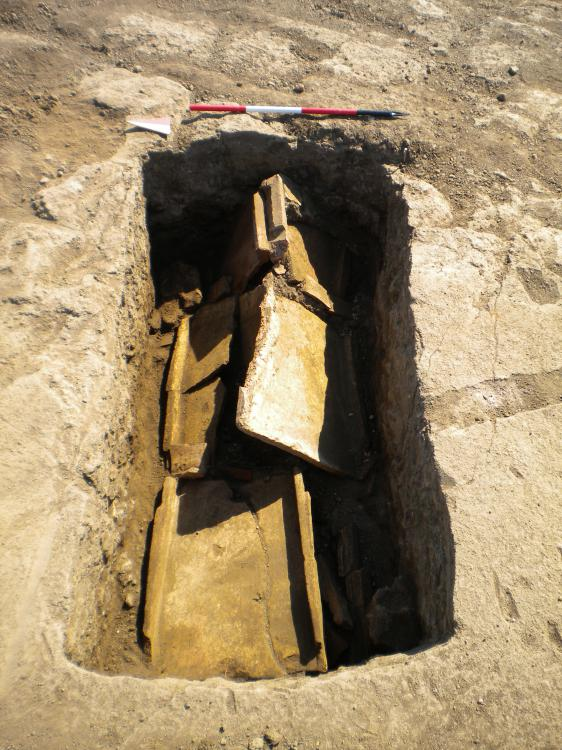
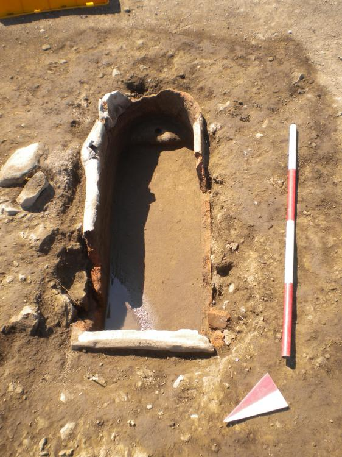
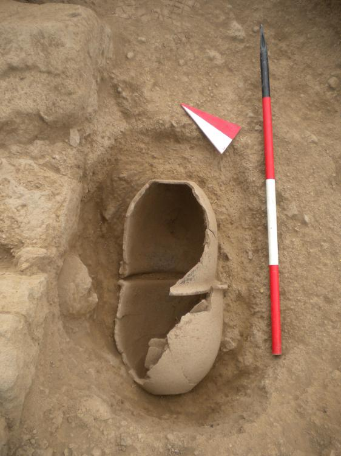

Other Graves Explored in Our Project
Continue reading below to learn about the other graves explored in this project!
It is important to know how Tomb 34 relates to the other burials discovered in Gabii to fully understand how it is both unique and typical of Imperial Roman graves. Another cappuccina grave, a sarcophagus, and an infant burial were therefore explored in order to discover these similarities and differences.

The picture above shows a map of the Area A and B excavation. The various burials we examined are marked. The additional cappuccina was from Area A in order to compare it to the Tomb 34 cappuccina from Area B. The sarcophagus and infant burial were taken from Area B along with Tomb 34.
Tomb 9 - Another Cappuccina Grave
Tomb 9 was found in Area A, and, like Tomb 34, this cappuccina grave was composed of tegulae covering human remains. One full tile and a half tile were preserved on the southeast side of the tomb. The vaulted pan tiles were situated with upturned ridges on the exterior and aligned horizontally. This grave was also special in that two fabrics were observed on the tiles, one a pale and coarse fabric and one a fine, red fabric. A cluster of mortar, rocks, and tile pieces were found on the The skeleton within was covered in sediment and highly disturbed, potentially due to looting or rodents.
Tomb 35 - A Clay Sarcophagus
Tomb 35 was a clay sarcophagus from Area B. In Gabii, cappuccina tombs were the preferred method of burial for adults. However, some sarcophagi were found, so this was a viable alternative way to bury adults in the Imperial period of Rome, likely for a member of the upper classes. They could be made of material such as marble, wood, lead, or stone, depending on the deceased's social status. This particular sarcophagus was made from clay with a lead sheet as its cover. It was shaped as a rectangle with a rounded end, in which there was a pillow-like head on which the skeleton’s cranium at one point rested. The lead lid had collapsed inward, allowing soil to accumulate in the interior of the tomb. A second disturbance caused fragmentation of the corner of the sarcophagus. The skeleton was therefore poorly preserved due to the inadequacy of the sarcophagus in protecting the human remains.
Tomb 32 - An Infant Burial
Tomb 32 was an infant burial found in Area B. While cappuccina graves are commonplace for adults, infants were normally buried in vessels, using a burial method known as “enchytrismos.” The high mortality rate did not allow children to be fully integrated into society, and so infants were buried differently and without grave goods because of this liminal social status. The vessels used in this tomb are two largely intact pots that cap each other. They had been broken, possibly by stones and chunks of other pottery that were found in the fill of the broken vessels. It is also possible that the tomb is associated to the wall alongside which it is buried. Within the vessels, the skeleton of a young infant was found and dubbed Cassandra by the excavating archaeologists.
References
Awan, Heather
2007 Roman Sarcophagi. Heilbrunn Timeline of Art History. New York: The Metropolitan Museum of Art. http://www.metmuseum.org/toah/hd/rsar/hd_rsar.htm
Graham, Emma-Jayne
2006 The Burial of the Urban Poor in Italy in the Late Roman Republic and Early Empire. Journal of Roman Studies 98, 264. http://journals.cambridge.org/action/displayAbstract?fromPage=online&aid=7246004&fileId=S007543580000232X
Killgrove, Kristina
2013 Baby Bones Were Trash to Romans. Powered by Osteons. http://www.poweredbyosteons.org/2013/01/baby-bones-were-trash-to-romans.html
Mogetta, Marcello and Jeffrey Becker
2014 Archaeological Research at Gabii, Italy: The Gabii Project Excavations, 2009–2011. American Journal of Archaeology 118(1), 171-188. http://www.jstor.org/stable/10.3764/aja.118.1.0171
Rawson, Beryl
2011 A companion to families in the Greek and Roman worlds. West Sussex: Wiley-Blackwell.